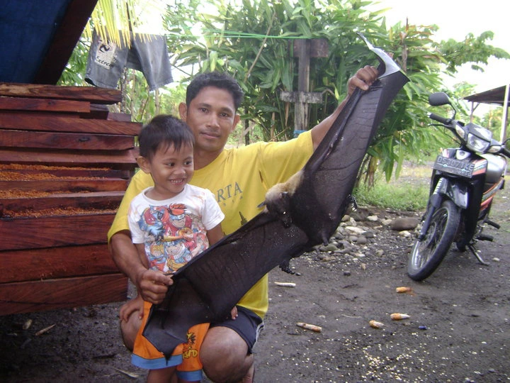
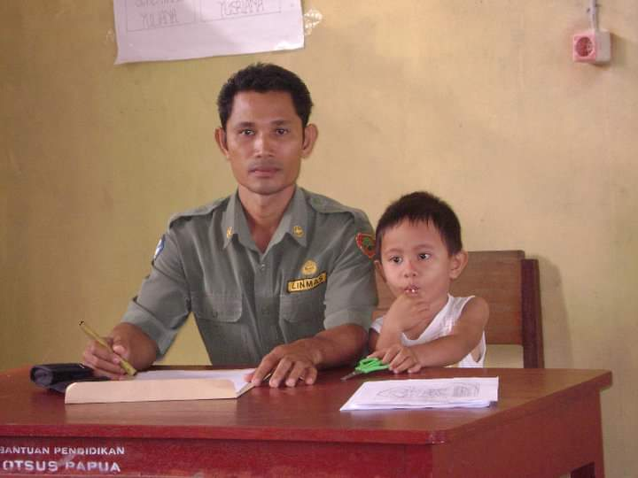
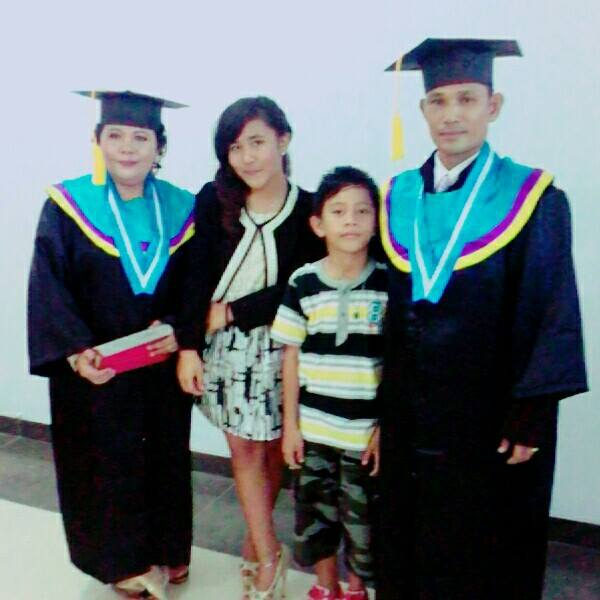

Happy Birthday, Dad!
Tambah tua, tambah keren.
sama deng tape kopi makin pekat, makin mantap.
From Your TroubleMaker Child (Obviously Me)
Selamat ulang tahun, Papa! Semoga tetap sehat, kuat, kong le ba sanang diri sadiki.
Cuma satu permintaan — tahun ini mohon jangan tanya “kapan pulang?” dari qt le inga rumah.
Photo Memories



Foto-foto bukti bahwa dari dulu Papa nintau bagaya. Sekarang? tetap kurang sama.
Birthday Video
(Tenang, nda ada video pas da pukul pa qt disini.)
Thanks for Everything
Makase banya jo. biarjo qt pe masa kecil mar jang bekeng pa ethan wkwk
With all our love,
Your family ❤️